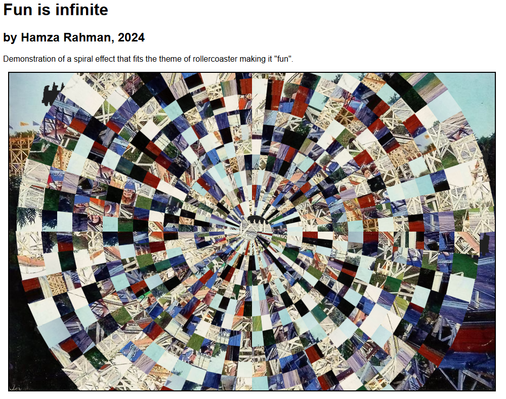

Highlighted Work

Creative Coding
P5.js experiments with motion, visuals, and input/output interactivity.
Sound & Signals
Synth and sound-reactive visual coding using Max/MSP and JavaScript.

Interaction Design
Interface exploration focused on user experience and aesthetics.